Model (raster, vector, 2D, 3D, render, animate, simulate, ...) a possible final project, compress your images and videos, and post it on your class page
Evaluate and select 2D and 3D software
Demonstrate and describe processes used in modelling with 2D and 3D software
Getting started with CAD using Fusion 360
First we were given a Introduction on "What is CAD?", Basics of Fusion 360 and other details to progress through it.
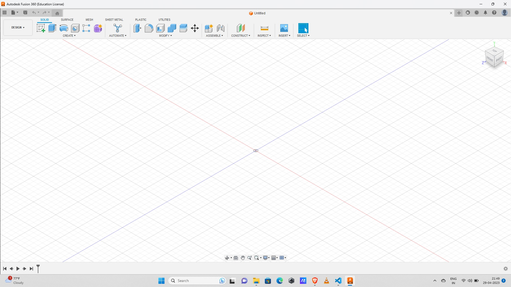
This is the basic dashboard of Fusion 360.
Getting started with Fusion 360
While getting started with Fusion 360 first we learned making a education account on basis of our college then we were taught how to do basic 2-D Sketches in Fusion 360 then we learned how to convert them to 3-D Solids and slowly we moved towards more complex structures.
Making solids in Fusion 360
First we make 2-D sketches and extrude or Revolve them to convert in 3-D solids we can also make joints make them move make them move simulate complex solids and structures Fusion 360 is very easy to use and give wide variety of options to work with even we can design circuits with the softwares and help in many mechanical and electronics aspects of engineering.
Other 3D Softweres
FreeCAD
Fusion 360
Blender
Auto-CAD
Rhino.6
About Simulation.
A simulation is the imitation of the operation of a real-world process or system over time. Simulations require the use of models; the model represents the key characteristics or behaviors of the selected system or process, whereas the simulation represents the evolution of the model over time. Often, computers are used to execute the simulation.Simulation is used in many contexts, such as simulation of technology for performance tuning or optimizing, safety engineering, testing, training, education, and video games. Simulation is also used with scientific modelling of natural systems or human systems to gain insight into their functioning, as in economics. Simulation can be used to show the eventual real effects of alternative conditions and courses of action. Simulation is also used when the real system cannot be engaged, because it may not be accessible, or it may be dangerous or unacceptable to engage, or it is being designed but not yet built, or it may simply not exist.
 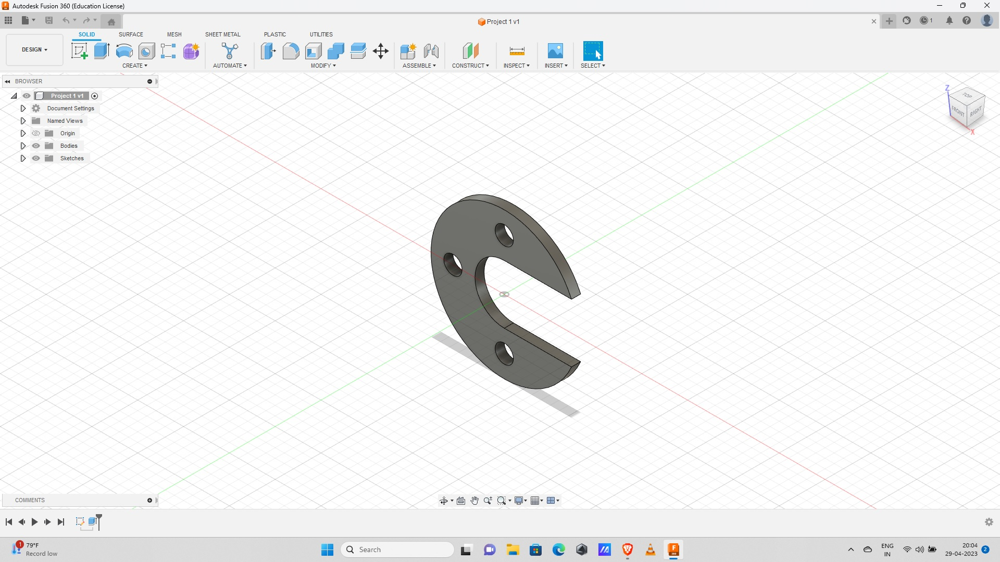
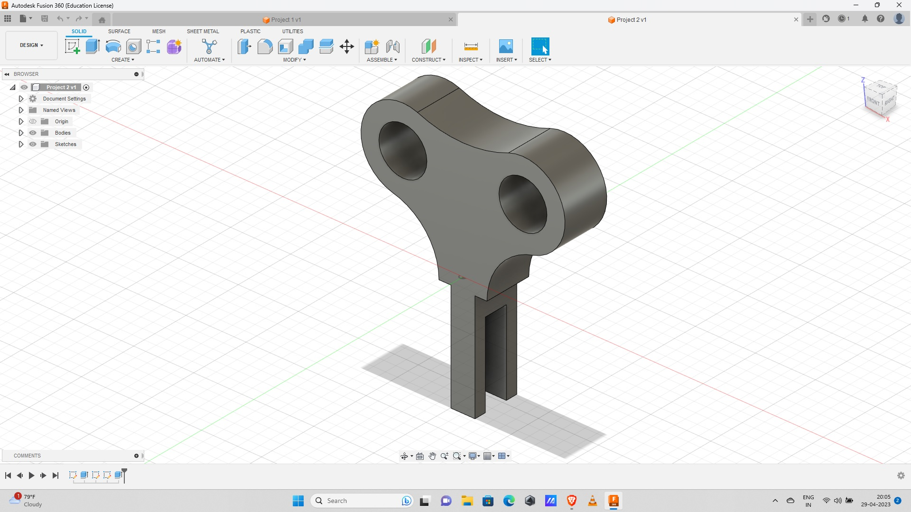
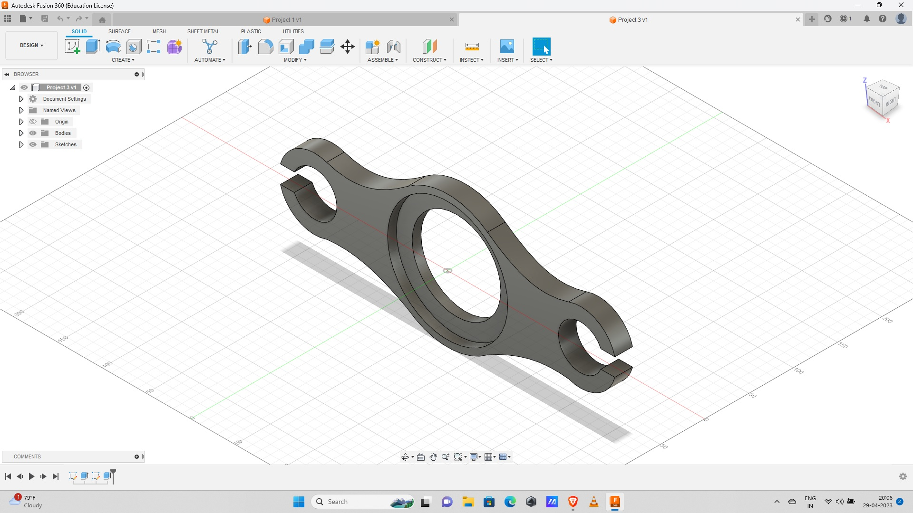
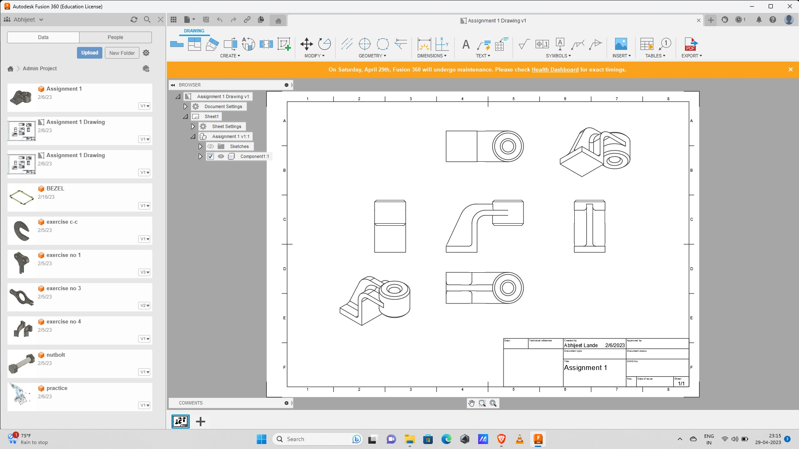
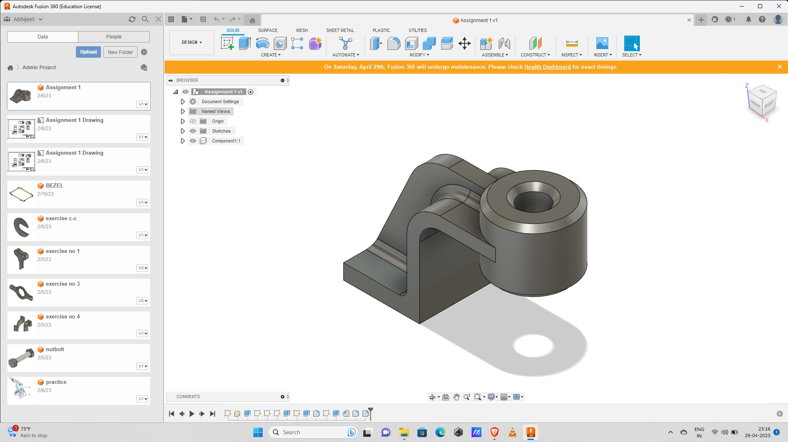
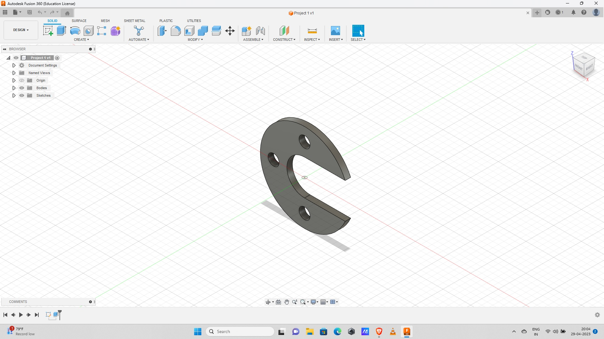
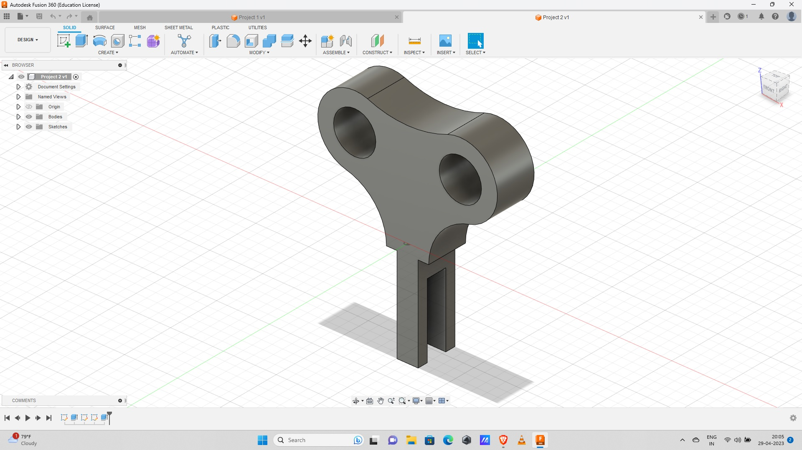
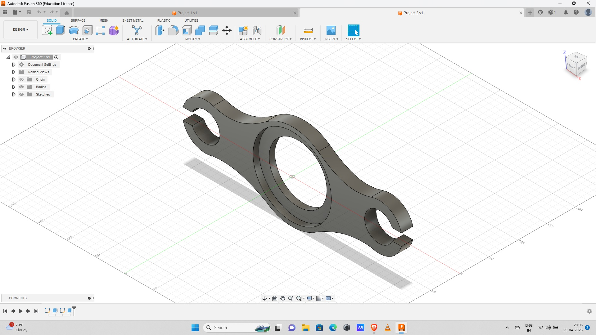
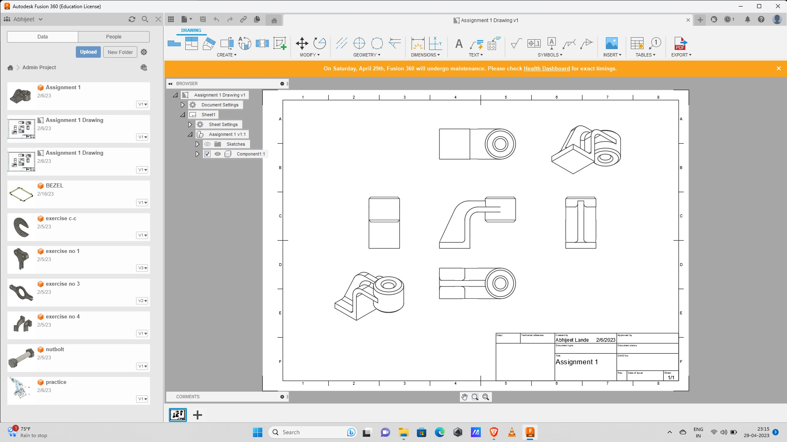
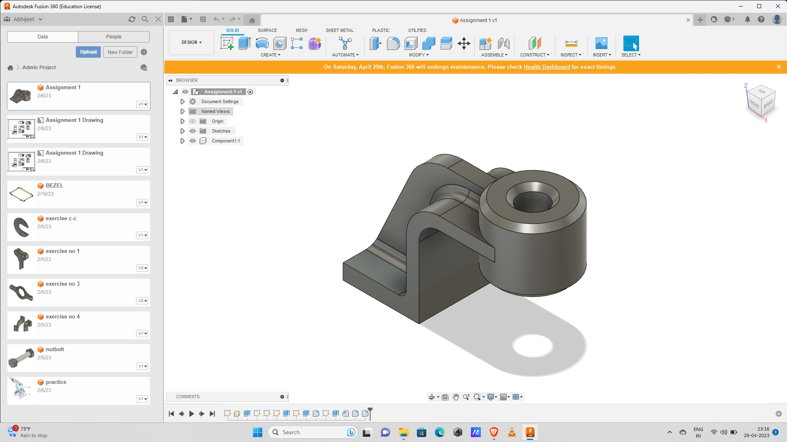